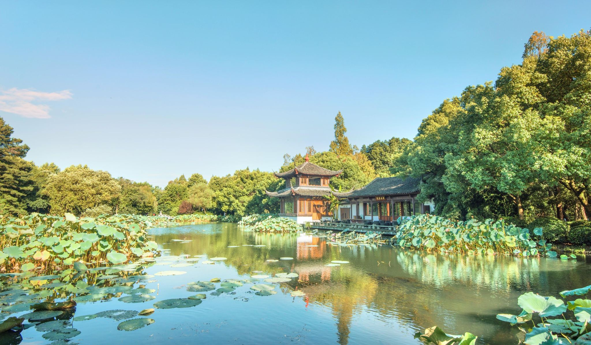
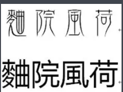
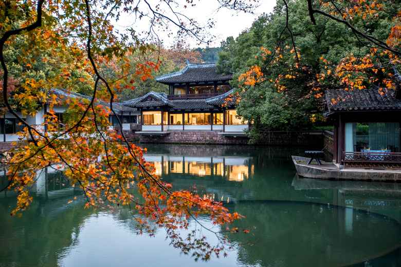
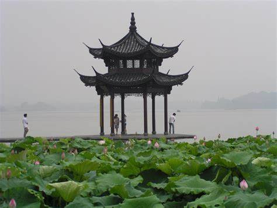
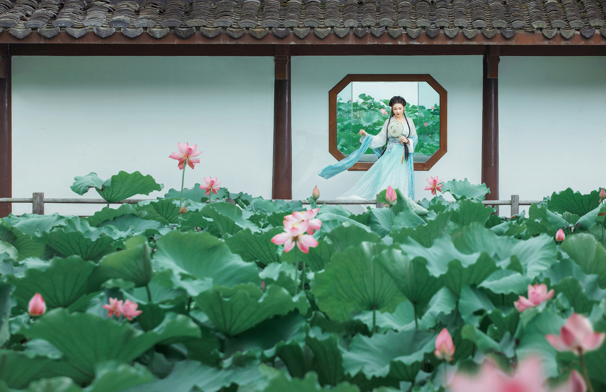
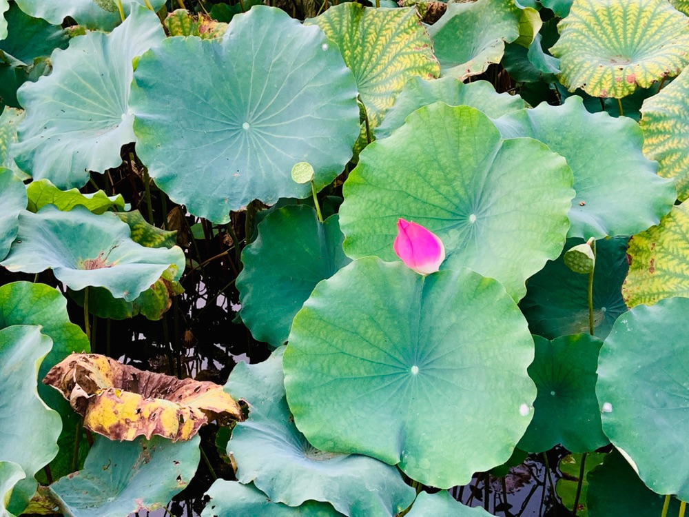

曲院风荷位于西湖西侧，岳飞庙前面。南宋时，此有一座官家酿酒的作坊，取金沙涧的溪水造曲酒，闻名国内。附近的池塘种有菱荷， 每当夏日风起，酒香荷香沁人心脾，因名“曲院风荷”。总占地面积12.65万平方米，总建筑面积268000平米。
曲院原名麯院 ，位于金沙涧（西湖最大天然水源）流入西湖处，南宋这里辟有宫廷酒坊，湖面种养荷花。夏日清风徐来，荷香与酒香四 下飘逸，游人身心俱爽，不饮亦醉，曲院风荷成为“西湖十景”之一。
曲院风荷占地14公顷，有曲院、风荷、滨湖密林等景区，东接岳湖，南邻郭庄，北接竹素园、植物园、岳飞墓庙，既是观赏“接天莲叶无穷碧， 映日荷花别样红”的夏游名园，也是西湖北线热点游览区休闲娱乐的好去处。
曲院最为精采处在风荷景区，宁静的湖面上，分布着红莲、白莲、重台莲、洒金莲、并蒂莲等等名种荷花。莲叶田田，菡萏妖娆，清波照红湛 碧。从水面造型各异的小桥上且行且看，人倚花姿，花映人面，人、花、水、天，相融，相亲，相恋，悦目，赏心，销魂。 夏日清风徐来，荷香 与酒香四下飘逸，游人身心俱爽，不饮亦醉。南宋画家马远等品题西湖十景时，把这里也列为“十景之一”。后来院颓塘堙，其景遂废。清朝康熙皇 帝南巡杭州，题写西湖十景景名时，就把这个久废的旧景移至苏堤的跨虹桥畔，亲书“曲院风荷”四字，立碑建亭。曲院风荷，以夏日观荷为主题， 承苏堤春晓而居西湖十景第二位。麯院原是南宋朝廷开设的酿酒作坊，位于今灵隐路洪春桥附近，濒临当时的西湖湖岸，近岸湖面养殖荷花，每逢 夏日，和风徐来，荷香与酒香四处飘逸，令人不饮亦醉。南宋诗人王洧有诗赞道：“避暑人归自冷泉，埠头云锦晚凉天。爱渠香阵随人远，行过高 桥方买船。”后曲院逐渐衰芜，湮废。清康熙帝品题西湖十景后，在苏堤跨虹桥畔建曲院风荷景碑亭。遗留下来的，只不过是一处小小庭院，院前 湖面小小荷花一片而已。
旧时的曲院风荷，仅一碑一亭半亩地，局促于西里湖一隅，颇有些名不副实。近年经过扩建，现在的曲院风荷起自跨虹桥畔的碑亭，沿岳湖、 金沙港直达卧龙桥外的郭庄，迤逦数里，建成岳湖、竹素园、风荷、曲院、湖滨密林区5个景区，面积达426亩，成为西湖环湖地区最大的公园。 东接岳湖，南邻郭庄，北接竹素园、植物园、岳飞墓庙，既是观赏“接天莲叶无穷碧，映日荷花别样红”的夏游名园，也是西湖北线热点游览区。
曲院风荷 与 错别字
西湖天下名胜，自古骚人墨客蜂聚、诗词题刻如云，十大胜景更是世人瞩目首选，为其题名者非至尊之主即至显之人。当今的如江泽民题写了 “花港观鱼”、启功题写了“平湖秋月”。历史上鼎鼎大名的康熙则题写了“曲院风荷”，立碑在曲院亭中。可惜的是这位“千古一帝”写了个别字“曲”， 害得300多年的游客苦苦寻求这个“院”到底“曲”在哪里。当然，他刚刚写出时，杭州人心知肚明是皇帝老倌写了个大别字，不敢指出而已，因为从 宋朝（或晚至明朝）起，当地人已把此地叫为“曲院”。明朝人田汝成的《西湖游览志》说：“曲院，宋时取金沙涧之水造曲以酿官酒。其地多荷花， 世称‘曲院风荷’是也”。而这个“曲”当时没有对应的简化字，是不可以写成“曲”的，写“曲”就是别字。一定要写，就得找出个什么“曲院”来。
到了康熙的孙子坐天下时，这个“曲院”仍然没着落。别字赫然摆在那里，乾隆觉得连自己的颜面都一并不好看，于是在碑的背面刻诗说：“莫惊 误笔传新榜，恶旨崇情大禹同。”“榜”就是题字。“恶旨”则是“绝旨酒”。《战国策》说大禹“绝旨酒”并断言“后世必有以酒亡其国者”。乾隆诗的 意思是，康熙哪里是笔误，是因为厌恶旨酒，就连造酒的“曲”都不愿意写了。这样一来，爷爷不但没有写别字，还借改“曲”为“曲”倡导“恶旨”， 长保国运，用心何其良苦。乾隆真是端的了得，隐恶扬善挖空心思。天子至尊，口含天宪，张嘴就是法律，叫臣子三更死，臣子就活不到五更天。 说“曲”不是别字就绝不是别字，天下何人敢说半个“不”。正因为这样强势，康熙还毫无顾忌地写错字，“把避暑山庄”的“避”字右上角“辛”下两横 写成三横，搞得“辛”不“辛”、“羊”不“羊”的；把“花港观鱼”的“鱼”下面4点写成3点。
1980年起，从原有的“曲院风荷”，沿岳湖延伸到西山路卧龙桥畔的郭庄，扩建成更加富丽多彩的“曲院风荷”新景区，占地面积达四百二十六 亩。分素园、风园、曲院、岳湖、密林、郭庄古园等六个景区。傍水建有古朴典雅的廊、轩、亭、阁，与绿云、荷香相映成趣。尤以三十八亩的 荷田令人瞩目，植有红莲、白莲、洒金莲、锦莲边、并蒂莲等各种荷花。
涧户云飞浸碧峰，鹭朋莺友宿林丛。
朱栏牵梦入幽境，波润青盘花馥浓。
曲院风荷，是以观荷为主题。“曲院”原是南宋朝廷开设的酿酒作坊，位于今灵隐路洪春桥附近，濒临当时的西湖湖岸，近岸湖面养殖荷花， 每逢夏日，和风徐来，荷香与酒香四处飘逸，令人不饮亦醉。遗留下来的，是一处小小庭院，景区保存了清代康熙皇帝题书的“曲院风荷”景碑小院。
曲院风荷最引人注目的仍是赏荷。公园内大小荷花池中栽培了上百个品种的荷花，其 中特别迷人的要数风荷景区。这里以水面为主，分布着 红莲，白莲，重台莲，洒金莲，并蒂莲等等名种荷花，莲叶田田，菡萏妖娆。 水面上架设了造型各异的小桥，人从桥上过，如在荷中行，人倚花 姿，花映人面，花，人两相恋。
西湖曲院，为宋时酒务地，荷花最多，是有曲院风荷之名。兹处红衣印波，长虹摇影，风景相似，故以其名名之。
香远风清谁解图，
亭亭花底睡双凫。
停桡堤畔饶真赏，
那数馀杭西子湖。
曲院风荷 南面有湖，湖上有九孔桥。湖西将近一里长的土堤，略仿西湖苏堤意境，称“苏堤春晓”。
曲院风荷最引人注目的仍是夏日赏荷。沿苏堤向北，走过压堤桥，远远就可看见左侧位于今灵隐路洪春桥附近的曲院风荷公园。圆中景点有：迎薰阁>景碑小院> 滨湖密林景区
公园内大小荷花池中栽培了上百个品种的荷花，其中特别迷人的要数风荷景区。这里以水面为主，分布着红莲，白莲，重台莲。洒金莲，并蒂莲等等名种荷花， 莲叶田田，菡萏妖娆。水面上架设了造型各异的小桥，人从桥上过，如在荷中行，人倚花姿，花映人面，花，人两相恋。
迎薰阁是为游人凭高赏景而建造的好去处，登阁远眺，可见“接天莲叶无穷碧，映日荷花别样红”的美好风景。清风徐来，荷香阵阵，沁人心脾，化人烦忧。迎薰阁 下，辟有荷文化陈列室，向人们展示“花中君子”出淤泥而不染的高风亮节，以及寄寓着人们的价值取向，审美观照和道德追求的种种艺文佳作。
岳湖景区保存了清代康熙皇帝题书的“曲院风荷”景碑小院，那块景碑是仅存的两块康熙西湖十景原碑之一。竹素园景区近年才建成开放，它原为清初西湖名园之一， 竹石亭榭，曲水萦环，清幽雅致。
滨湖密林景区则为游人准备了帐篷，吊床，竹木小屋。在此可以野炊，垂钓，娱乐，聚会。园北侧靠近岳坟商业区的位置开设有风荷酒苑，建有仿古酿酒作坊和几座 别具一格的民族风情酒楼。
曲院风荷树荫蔽日，青苔茵茵，路径曲折，真是一步一景，步步留恋。院里特别引人注目的是一口一口大缸，里面养植的是一株株荷花。六月初的荷花只是花骨朵 儿，但荷叶是异常茂盛，如蒲扇般展伸着，毛茸茸的荷叶如绿色平绒布般显得特别厚实。因为茎是细细的，因而它迎风摇曳时也有一股妖娆的味道。荷叶的中心聚集着 一洼水，好奇地拨弄荷叶，一洼水顿时打破了宁静，化作大珠小珠在叶面上打起滚儿来，就像欢快的小孩子在草地上玩耍一般的。“扑嗤”一大颗水珠不小心离叶坠落在 地上，溅起水珠点点，我的心猛然一紧，就像小时候打碎玻璃杯一般心疼。
荷叶渐渐平静了，大珠小珠又汇聚到了菏叶中心，一汪静水变成了一块晶亮晶亮的明镜，静卧着，泛着诱人的光亮。仿佛看见了前来汲酒的宫女，她暂时离开沉闷的 皇宫，如小鸟般欢畅，衣袂翩然，一路莺歌。走到这里，她驻足了，对着荷叶上的“镜子”细细照着，抚着发簪叹道：“花开花落几度春，只恐青丝变白头”。
人说“白头宫女在，闲坐说玄宗”的可悲，而我实在想一辈子留在曲院风荷院内，饮西湖水，赏风荷叶，听鸟儿鸣，想到这里，我心醉了……
一湖碧绿的荷叶，在夕阳的余辉中轻轻摇曳。绿叶中零星点缀着粉白的荷花。花大都含苞未放，似羞涩的少女亭亭玉立。而绽开的，又如绰约的美人风情万种。午后， 曾下了点雨，那田田荷叶上，凝结着一颗颗雨珠。风过处，雨珠和着光影滚动着，晶莹剔透，闪闪烁烁，让这一池莲荷更显芬芳有致。
水波潋滟，游船点点，远处是山色空蒙，青黛含翠。“毕竟西湖六月中，风光不与四时同。”夏日的西湖，独领风骚的应是这片接天莲荷了。杭城夏日赏荷最佳处， 当是曲院风荷。“曲院”原是南宋朝廷开设的酿酒作坊，位于今灵隐路洪春桥附近，濒临当时的西湖湖岸。近岸湖面养殖荷花，夏日，和风徐来，荷香与酒香四处飘逸， 令人不饮亦醉。后曲院逐渐衰芜，湮废。清康熙帝品题西湖十景后，在苏堤跨虹桥畔建曲院风荷景碑亭。遗留下来的，只不过是一处小小庭院，院前湖面小小荷花一片 而已。
如今的曲院风荷是一九八三年以来逐步建成的大型公园，全园分为岳湖，竹素园，风荷，曲院和滨湖密林五大景区，主景区以亭、台、楼、阁、榭、桥和典廊等组合 成名副其实原“曲院”。曲院风荷内栽培了上百个品种的荷花。分布着红莲，白莲，重台莲。洒金莲，并蒂莲等等名种荷花。莲叶田田，菡萏妖娆，自是意趣无穷。
凝目眼前千姿百态的莲荷，想起，宋周敦颐先生作《爱莲说》。“……予独爱莲之出淤泥而不染，濯清涟而不妖，中通外直，不蔓不枝，香远益清，亭亭静植，可远 观而不可亵玩焉。”活在尘世间，犹如活在淤泥中。有几人能不染淤泥的污浊，更有几人能保得住“出淤泥而不染”的清白？人们向往莲之出淤泥而不染，只是一种善良， 慈爱的本性使然。如我，每每仰望观音菩萨，端坐莲花宝座，手拈一朵莲花，飘渺云端，平和安详。便以为那莲，一定寓意着爱和宽容。抑或，一种千锤百炼后的超脱。
许是看多了文人墨客的采莲曲，徜徉莲荷间，总会依稀可见，一群妙龄女子泛轻舟，涉江采芙蓉的情景。而那女子一定都是挽双髻，着绿衫，巧笑兮兮。“摘取芙蓉 花，莫摘芙蓉叶。将归问夫婿，颜色何如妾。”“郎去采莲花，侬去收莲子。莲子同心共一房，侬可知莲子？”郎欢女悦，尽在曲中，莲香荷艳，似在行墨间流淌。古人爱 把美貌女子喻为莲。清朱彝尊“一自西施采莲后，越中生女尽如花。”说的是西施在越江采莲后，当地的女孩，便全都貌美如花了。传说固不可信，但一曲《越江词》到 是千古流传了下来。
曲院风荷荷香酒
南宋初年，宋高宗赵构建都杭州，成为南宋第一个皇帝。赵构终日花天酒地，特地在西湖九里松洪春桥堍设立了一所曲院，招聘天下酿酒能手，专门酿制美酒， 供宫廷享用。曲院建造得十分讲究。前面挖了一口大池塘，引进西湖水，种植了并蒂莲、红莲、白莲等各种名贵荷花，四周造起曲折回廊，亭台水榭，后面是制酒、 酿酒工场。每逢莲塘碧露、南风送香的初夏季节，满院红、白荷花盛开，煞是好看。
这一年六月，曲院满池荷花盛开，碧绿碧绿的荷叶，像干层翠盖；红艳洁白的荷花．似锦绣红妆。酿酒老人们正忙碌地在晒曲、制曲。忽然，院门开处走进来一位五 十开外、头戴方巾、身穿青衫的读书人。他一眼望见满池荷花，南风吹过，清香沁人，不禁脱口赞道：“多好的荷花，真是一处赏荷胜地啊!”一边观赏．一边漫步来到酿 酒老人面前，问道：“老大爷，请问这是什么所在?”酿酒老人回答说：“这是酿酒曲院。”那位读书人不胜感慨：“荷花虽好，可借缺少美酒助兴。”酿酒老人见他是位读 书识理的人，便请他到池边荷香亭里休息，说道：“先生请坐，舍下略备薄酒，待我取来，供先生助兴。”
读书人手捋长须，微笑点头，连连道谢。不多久，酿酒老人便提着一葫芦酒，端上一只大碗，放在桌上，满满地斟上一大碗，说：“先生，请用。”这时，刚好一阵 大风吹过，卷起满池荷瓣，恰巧有一瓣掉在酒碗之中，阵陈荷香，酒香扑鼻。酿酒老人正要替他取掉荷瓣，那读书人连忙伸手止住：“别拿掉，别拿掉！这正是一碗荷 香美酒呵!”一边端起酒碗，满碗饮了下去，连声赞道：“好酒，好酒，正有一股荷花香味儿呢！”酿酒老人听客人称赞他酿制的酒好，又满满斟上一大碗，说：“不瞒 客官说，我们这曲院制的酒曲，常常有荷花粉吹落进去，酿出来的酒，还真有点荷香哩!”
读书人一连饮了三大碗，趁着酒兴招呼酿酒老人说：“多谢老大爷，请你去取笔墨纸砚来!”酿酒老人取来纸笔，只见那读书人将宣纸往桌上一铺，望着满池荷花， 饱蘸浓墨，向纸上一泼，又“唰唰”添上几笔，一片水墨荷花，跃然纸上。那读书人意犹未尽，又举笔画上曲院小屋，题上“曲院风菏”四字，写上自己的名字。那读书 人将画送给酿酒老人，作为酬谢，告别而去。酿酒老人虽不识字，也喜爱这幅画，将它挂在曲院里。后来有人告诉他，这是南宋四大画家之—马远的手笔哩！从此， 曲院风荷便大大出名，成为“西湖十景”之一。曲院酿制的荷香酒，也成为杭州一大名酒。
但是，这与康熙有何干？
原来是这样：根据史料记载：在西湖西北隅，濒岳湖、西里湖，与苏堤遥遥相望。曲(曲)院，原系南宋年间设在行春(即洪春桥)酿制官酒的作坊，坊置约在金沙涧 汇人西湖处。明《西湖游览志》卷十：“曲院，宋时取金沙涧之水造麴，以酿官酒。其地多荷花，世称‘曲院风荷’是也。”宋亡，曲院荒湮，景也不存。清雍正 《西湖志》卷三：“国朝康熙三十八年，构亭于跨虹桥之北，引流叠石为盘曲之势。圣祖仁皇帝亲洒宸翰，改‘曲院’为‘曲院’。“荷风”为“风荷”恭制匾额，奉悬亭楣。